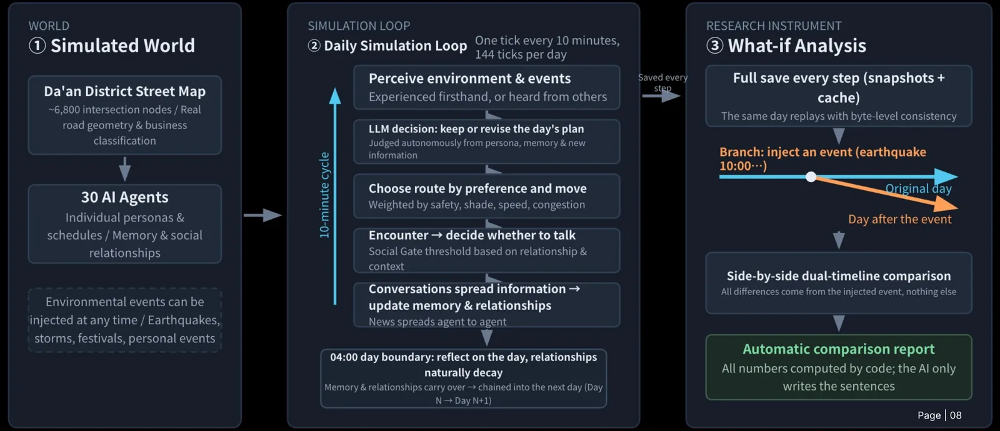
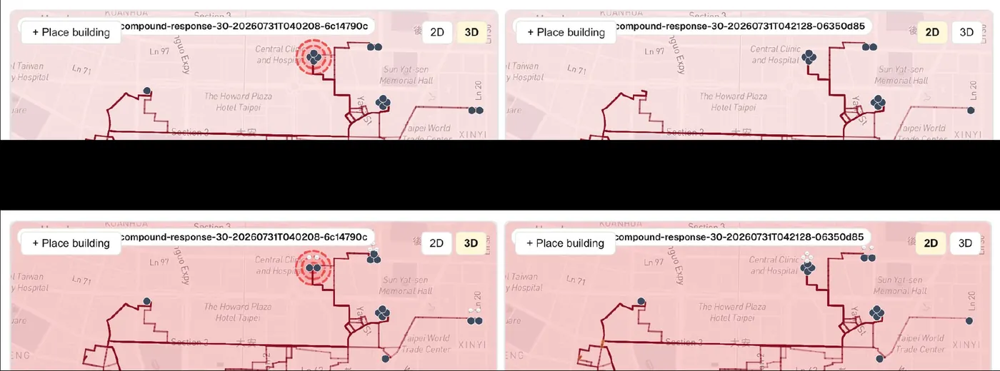
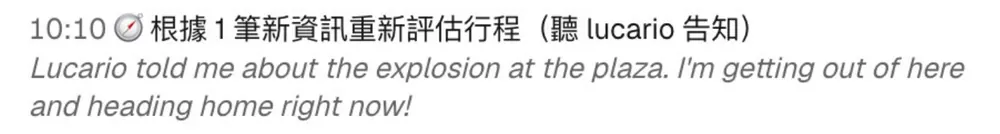
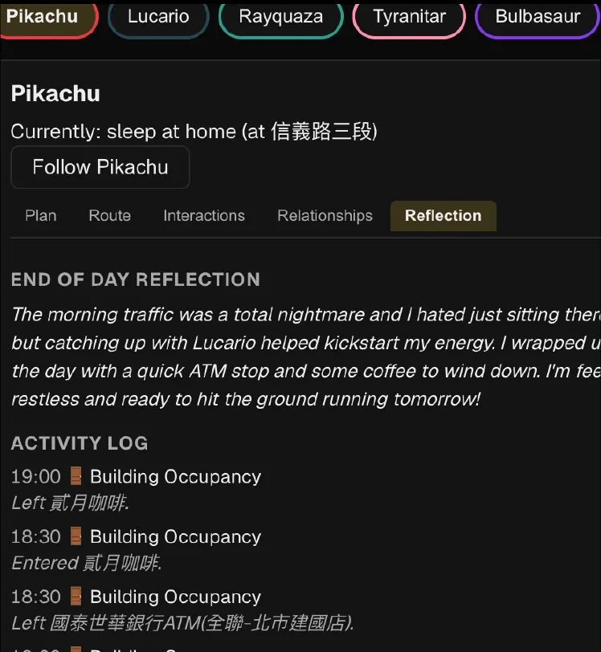
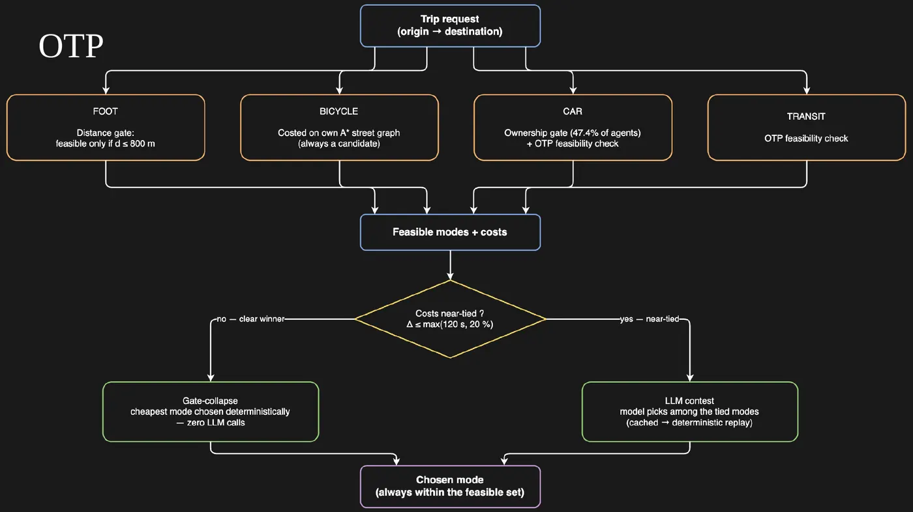

An LLM-driven pedestrian simulation of Da’an District, Taipei. Agents with profiles, memories and daily routines walk a real street graph of about 6,800 nodes from OpenStreetMap, rendered on Mapbox GL. 30 agents in the base scenario, up to 500 in scaling runs.
MIT City Science Lab @ Taipei Tech, a node of the MIT Media Lab City Science network, with National Taipei University of Technology · Research Trainee, Urban Informatics · full-time Jul 1 to Aug 21, 2026, part-time alongside IB Year 2 since · TypeScript, Next.js, vLLM, OpenTripPlanner
Rec. 1A 500-agent earthquake run in replay mode. Screen recording from the lab build. simulation
TAAI2026 long oral, accepted after peer review
500agents in the largest run
5silent behavioral drifts caught by the gate suite
76%of trips went to bikes when mode choice ran on physics alone
Why it existsJul 1–3, 2026
Scale without cognition
On my first morning my mentor, Ian Huang, gave me four papers: Generative Agents, GATSim, AgentSociety and the lab’s own Urban Mobility Simulator. The lab’s simulator scaled, but its agents didn’t interact, remember or react to anything.
We had scale and realism. We needed cognition and interaction. I took agent-to-agent interaction.

Fig. 1How a simulated day runs. One tick is 10 minutes, 144 ticks a day. Every step is saved, so a day can be branched at an event and compared with the original. From the midterm deck.
Built · 1Agent-to-agent gate
Who talks to whom
LLM calls are the expensive part, and in a crowd almost every agent is near someone. CitySim decides interactions with a softmax over a belief score and no hard cutoff, so every co-present pair is a candidate.
I put a gate in front of the LLM. Stage one, co-presence, is pure geometry and free. Stage two, the gate, is cheap arithmetic over the relationship, the place, the activity and each agent’s social openness. Stage three, the LLM call, only runs if the gate opens. I also added decay to the social beliefs and made them provisional.
Try the gateformula from the lab decks · current threshold 0.45
Identical settings gave different routes. Two causes were stacked on top of each other: sampling temperature, and noise from attributes that only existed in the prompt. That’s where my obsession with determinism started.
Every tick is snapshotted, and every LLM response is stored under the SHA-256 of its prompt. Same prompt, same key, same stored answer, so a run replays byte for byte. That turns replay into a test. If two runs differ, something changed, and it’s my job to find what.
Try the cacheSHA-256 runs in your browser
0 LLM calls · 0 replay hits
Built · 3Fork and compare
Branch a day, swipe between timelines
Fork any run at any tick, inject an event, and compare the two timelines with a swipe view. Because replay is byte-identical, the fork only differs from the base where the event reached. The comparison summary computes every number in code. The LLM only writes the sentences.
Byte-identical replay. Any difference is caused by the earthquake, nothing else.The line I built the midterm demo around
Rec. 2Inject & Compare on a 100-agent earthquake run: picking the fork time, the swipe view, then the comparison summary. Screen recording from the lab build. simulation

Fig. 2Base run (left) and fork (right) at the same moments. simulation

Fig. 3An agent re-plans at 10:10 after another agent tells it about the explosion. simulationAbout Jul 30–31, 2026
The midterm demo
Three minutes, live, replay only, co-presented with Yu-Chi Su. I swiped a base run against a fork with an earthquake at 10:00, a tsunami at 11:00, one agent’s stomachache at 14:00, a thunderstorm at 16:00 and a food festival at 20:00. In the fork, conversations fell from 41 to 20. simulation
Built · 4Days and events
Multi-day runs
Runs chain across days. At the 04:00 day boundary every agent reflects on its day, relationships decay a little, and the memory carries into the next day. Events can be injected at any time for what-if experiments: earthquakes, typhoons, road closures, and personal events like a stomachache.

Fig. 4One agent’s end-of-day reflection and activity log. simulationRec. 3An event spreading from one building in the 3D view. simulation
Built · 5Transport
Five modes, and when the LLM decides
Agents choose between walking, metro, bus, bike and car, with trips checked against the lab’s OpenTripPlanner server. Walking is only feasible up to 800 m. Car trips are gated by ownership, set to 0.4744 from the 2024 家庭收支調查 (data.gov.tw dataset 109890, Taipei row).
If one mode is clearly cheapest, it wins with zero LLM calls. If the costs are near-tied, within 120 s or 20% (whichever is larger), the LLM picks, and that answer is cached so replay still holds.
Lab Slack
Asking in Slack
I asked a public question about OpenTripPlanner in the lab Slack. A colleague set up access in the thread. Five modes were in that week, and the calibration surprise came with them: with mode choice on physics alone, bicycles won 76% of trips. That’s behaviorally absurd. It became the argument for letting the LLM decide the near-ties. simulation

Fig. 5Mode choice. A clear winner costs zero LLM calls. A near-tie goes to the LLM, cached for replay. From the final deck.
Built · 6Gates 0–7
Tests that don’t trust my eyes
Gates 0–7 is the verification suite I built around replay. It caught five cases of silent behavioral drift. Three were defects from a single merge that never showed up as conflicts. Byte-identity replay was the only thing that surfaced them.
About Jul 27–28, 2026
Deleting the fixtures twice in one day
I deleted git-tracked fixture runs through a trash button in the UI and broke Gate 1. Then I did it again the same day. I restored them with git restore and locked them with chflags -R uchg. They’re not old runs. They’re test data. My eyes can’t be the guard, so the tooling has to be.
About Aug 17–18, 2026
The LLM_CACHE=0 night
Gates 3 and 7 diverged. After hours of diagnosis I found LLM_CACHE=0 in .env.local, so the gates had been running live generation the whole time. Now I check cache state first, and strict replay throws if the cache is off.
ResultsAnd how I present them
Accepted at TAAI 2026
My first-author paper, “Generative Agents City Simulation,” was accepted after peer review as a long oral presentation, 12 minutes plus 2 of Q&A in English, at the TAAI 2026 High School Special Session, Nov 20–21, New Taipei City. TAAI is the International Conference on Technologies and Applications of Artificial Intelligence. I handed in the final term report on Aug 21, 2026.
Yu-Chi Su built the first 100-agent scenario. I scaled the runs to 500 agents.
Mentor feedback
“We need a storyline”
A demo of feature A, B and C says nothing unless you say why each one exists. So I restructured the report, the demo and the paper to start every feature from the problem it solves.
LimitsBefore anyone asks
Limits
Data
Everything on this page is simulation output, not observed human behavior.
Gate
The social-gate threshold, 0.45, was tuned empirically.
Transport
Transport parameters aren’t tuned. Scooters aren’t modelled.
Cosmetic
Branch-tree bars stop at 18:00. I left that bug in on purpose.
CreditWho built what
Credit
Yu-Chi Su (蘇昱齊) built the shared infrastructure: the vLLM setup, run save/load, scenarios, the social-memory layer, parallel batching and the first 100-agent scenario. The six pieces under “Built” are mine, and they run on that infrastructure.
Mentor: Ian Huang. Head of Urban Informatics: Roy (Yu-Ta) Lin. Lab director: Dr. Michael Chia-Liang Lin. Recordings and slides are from the lab build, shared with permission.
 Daniel Tsen
Daniel Tsen